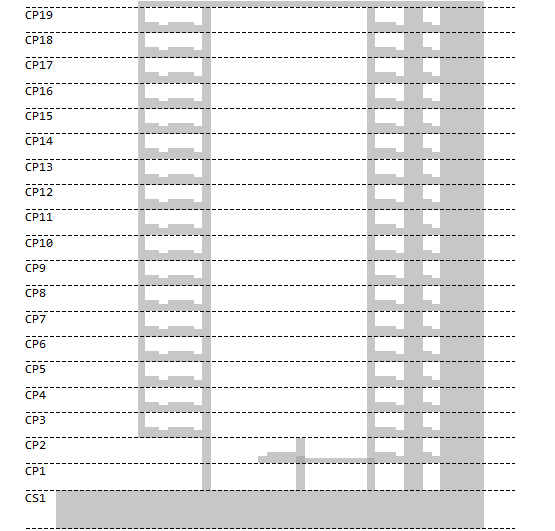
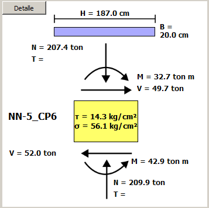

FELIPE CORDERO
Software Design
ETABS Post-Processor
Sectional Analysis
Retaining Walls
Structural Modeling
Tutorials
Sectional Analysis Software
Contact
how to create own website
ETABS Post-Processor
Program that allows working with ETABS databases through a high-level graphical interface. This program allows:
Quickly verify the structural “health” of the building
Check forces in elements
Design reinforcements in a user-friendly environment
Generate calculation reports


Previous
Next
Close